Verteilen · Erinnern · Abhaken
Finnvelo Klarschiff
In EntwicklungKlar Schiff, der Putzplaner, organisiert wiederkehrende Haushaltsaufgaben für die ganze Familie: mit festem Turnus, zuständiger Person und Erinnerung auf dem richtigen Handy. Der gemeinsame Haushalt wird verschlüsselt abgeglichen – ohne Konto und ohne Anmeldung.
Beschreibung
Bad putzen, Spiegel wischen, Blumen gießen – Aufgaben, die immer wiederkommen und die sich niemand merken will. Im Verzeichnis liegt der Vorrat aller Aufgaben eines Haushalts; über 150 fertige Vorschläge aus zwölf Bereichen erleichtern den Start. Was gerade ansteht, wird von dort übernommen – für eine Person oder für alle. Beim Abhaken fragt die App, ob die Aufgabe gleich neu eingeplant werden soll, und hält fest, wer sie wann erledigt hat.
Jeder Haushalt bildet einen gemeinsamen Kanal. Familienmitglieder werden per Einladung dazugeholt und sehen dieselben Aufgaben. Die Daten werden auf dem Gerät verschlüsselt – der Server speichert sie, lesen kann er sie nicht. Erinnerungen plant jedes Handy selbst, und zwar nur für die eigenen Aufgaben und die des ganzen Haushalts.
Die App hat sechs Reiter. Offen zeigt, was heute und in den nächsten Tagen ansteht, auf Wunsch gefiltert nach Person. Im Verzeichnis liegen alle Aufgaben nach Bereichen – Allgemein, Küche, Bäder, Wohnzimmer, Schlafzimmer, Flur, Hauswirtschaftsraum, Keller, Balkon, Garten und Auto. Der Kalender rechnet die wiederkehrenden Aufgaben voraus, der Verlauf zeigt, wer in den letzten 30 Tagen wie viel erledigt hat und ob es pünktlich war. Unter Haushalt stehen die Personen mit ihren Farben, und unter Mehr liegen die Einstellungen.
Jede Aufgabe bekommt einen Bereich, einen Turnus – alle so viele Tage, Wochen, Monate oder Jahre – und eine nächste Fälligkeit. Zuständig ist eine feste Person, alle oder mehrere reihum: Nach jedem Abschluss ist die nächste dran. Erinnert wird am Tag selbst oder ein bis drei Tage vorher zu einer festen Uhrzeit, auf Wunsch täglich, solange die Aufgabe offen ist. Ob der nächste Termin ab der Erledigung oder ab dem Solltermin zählt, legst du je Aufgabe fest; eine Aufgabe lässt sich außerdem pausieren oder vorerst im Verzeichnis parken.
Wer etwas abhakt, wählt aus, wer es gemacht hat. Danach wird die Aufgabe neu eingeplant oder wandert zurück ins Verzeichnis, bis sie wieder jemand braucht. So entsteht nebenbei ein ehrlicher Überblick, wie sich die Arbeit verteilt.
Aufgaben mit Turnus
Wöchentlich, alle zehn Tage, alle drei Wochen – frei einstellbar.
Über 150 Vorschläge
Fertige Aufgaben aus zwölf Bereichen – übernehmen, anpassen, fertig.
Wer ist dran
Feste Zuständigkeit, Wechsel der Reihe nach oder Aufgabe für den ganzen Haushalt.
Erinnerung am Gerät
Die Meldung erscheint pünktlich bei der zuständigen Person – ohne Push-Dienst, direkt vom eigenen Handy.
Verlauf
Wann wurde was zuletzt gemacht – damit sich die Arbeit fair verteilt.
Kalender
Tages-, Wochen-, Monats- und Jahresansicht, in der wiederkehrende Aufgaben vorausberechnet sind.
Eigene Farben
Helles oder dunkles Design und selbst gewählte Farben für jedes Familienmitglied.
Erledigt – von wem?
Beim Abhaken die Person wählen, dann neu einplanen oder zurück ins Verzeichnis.
Nachhaken
Bleibt eine Aufgabe liegen, erinnert die App auf Wunsch jeden Tag erneut.
Pausieren und parken
Aufgaben vorübergehend anhalten oder im Verzeichnis liegen lassen, ohne sie zu löschen.
Haushalt weitergeben
Den ganzen Haushalt als Datei sichern oder auf ein anderes Gerät übertragen.
Ohne Konto
Keine Anmeldung, keine E-Mail-Adresse – die App ist sofort einsatzbereit.
Oberfläche
Die folgenden Ansichten zeigen Klar Schiff 1.1 mit einem erfundenen Beispielhaushalt.
Anna, Ben und Clara teilen sich 14 Aufgaben aus den Vorschlägen. Ein Klick auf ein Bild öffnet es groß.
Im Alltag
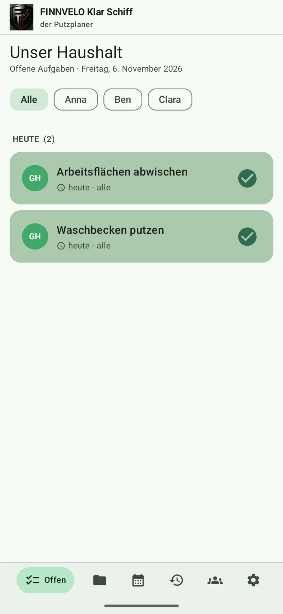
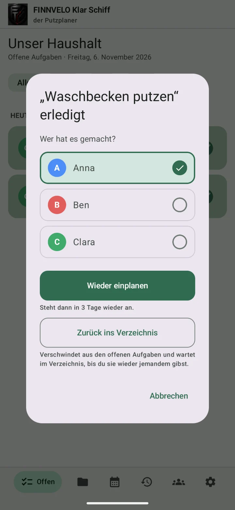
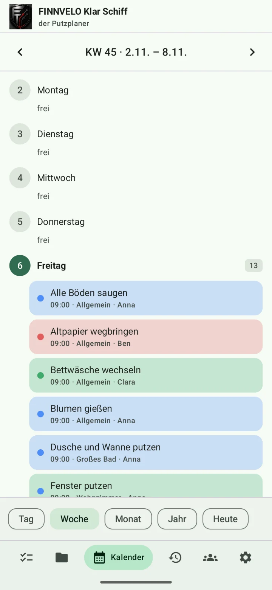
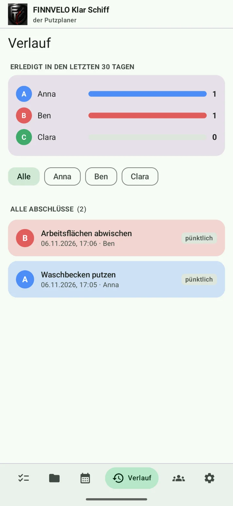
Aufgaben anlegen
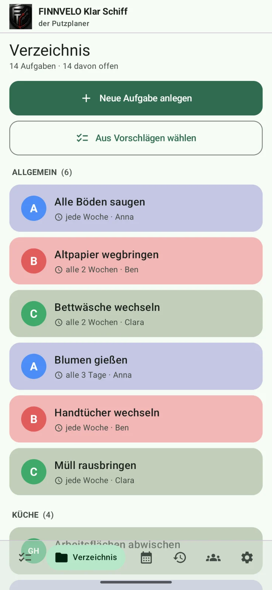
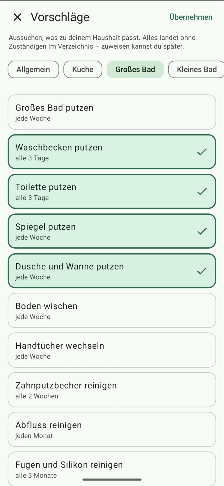
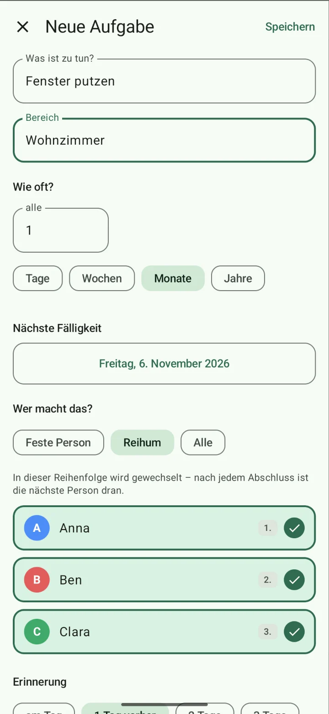
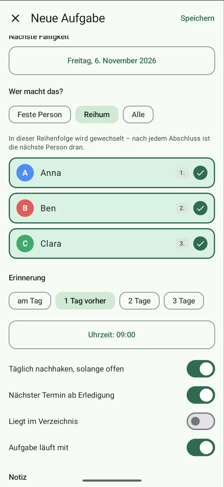
Haushalt und Einstellungen
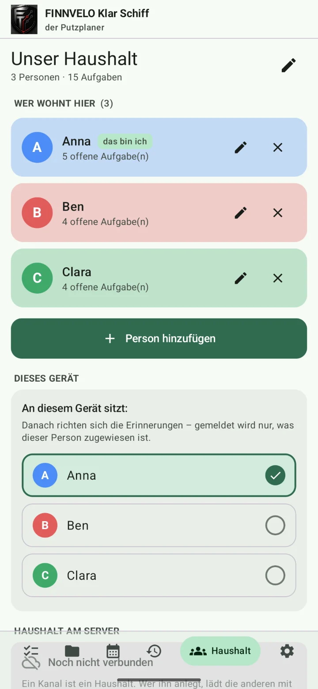
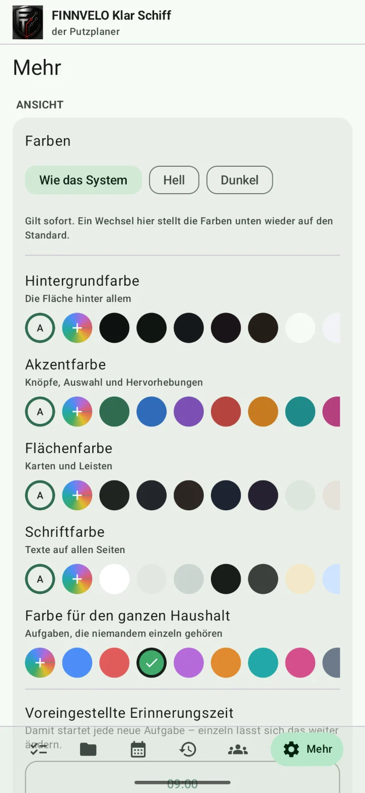
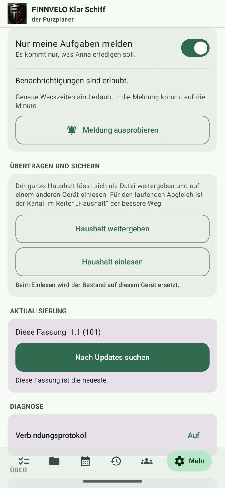
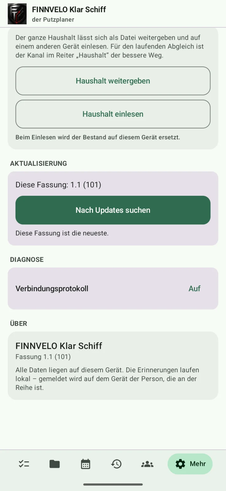
Einstellungen – das kannst du anpassen
Vieles stellst du direkt an der Aufgabe ein, den Rest im Reiter „Mehr“ und unter „Haushalt“. Ein Überblick:
Je Aufgabe
- Was und woName der Aufgabe und Bereich.
- Wie oftAlle so viele Tage, Wochen, Monate oder Jahre, dazu die nächste Fälligkeit.
- Wer macht das?Feste Person, reihum in einer festen Reihenfolge oder alle.
- ErinnerungAm Tag oder ein bis drei Tage vorher, zu einer festen Uhrzeit.
- Täglich nachhakenErneut erinnern, solange die Aufgabe offen ist.
- Nächster TerminAb der Erledigung oder ab dem Solltermin gerechnet.
- Offen oder im Verzeichnis, läuft mit oder pausiertAufgaben parken oder anhalten, ohne sie zu löschen. Dazu eine Notiz.
Haushalt
- Name des HaushaltsSteht oben auf der Seite „Offen“.
- PersonenHinzufügen, umbenennen, entfernen – jede mit eigener Farbe.
- An diesem Gerät sitztDanach richten sich die Erinnerungen dieses Handys.
- Haushalt am ServerEinen Kanal anlegen und die anderen per Einladung dazuholen oder einer Einladung folgen.
Ansicht
- FarbenWie das System, hell oder dunkel.
- Eigene FarbenHintergrund, Akzent, Flächen, Schrift und die Farbe für Aufgaben des ganzen Haushalts – jeweils automatisch oder frei gewählt.
- Voreingestellte ErinnerungszeitDamit startet jede neue Aufgabe, ab Werk 09:00 Uhr.
Erinnerungen und Daten
- Nur meine Aufgaben meldenEs kommt nur, was die Person an diesem Gerät erledigen soll.
- Benachrichtigungen und genaue WeckzeitenZeigt, ob Android die Meldungen erlaubt; „Meldung ausprobieren“ testet sie.
- Übertragen und sichernDen Haushalt als Datei weitergeben oder einlesen.
- Aktualisierung und DiagnoseNach neuen Fassungen suchen, Verbindungsprotokoll ansehen.
Tutorial-Video
Ein Tutorial-Video wird hier ergänzt, sobald es bereitsteht.
Besondere Vorteile
- Kein Konto, keine Anmeldung
- Ende-zu-Ende verschlüsselt – der Server sieht keine Inhalte
- Ein gemeinsamer Kanal je Haushalt, Beitritt per Einladung
- Erinnerung nur bei der zuständigen Person
- Über 150 fertige Aufgaben für einen schnellen Start
- Reihum-Verteilung, damit niemand alles allein macht
- Verlauf zeigt, wer was erledigt hat
- Funktioniert auch ganz ohne Server auf einem einzigen Handy
Zielgruppe
Für Familien, Paare und Wohngemeinschaften, die sich den Haushalt teilen und nicht jedes Mal neu absprechen wollen, wer gerade dran ist.
- Familien, in denen auch die Kinder feste Aufgaben bekommen sollen.
- Wohngemeinschaften, die Putzdienste fair reihum verteilen wollen.
- Alle, die seltene Aufgaben wie Kühlschrank auswischen oder Kaffeemaschine entkalken nicht vergessen möchten.
Daten und Datenschutz
Personen, Aufgaben, Verlauf und Einstellungen liegen als Datei im Speicher der App auf deinem Handy. Es gibt kein Konto und keine Anmeldung, und die Erinnerungen plant jedes Handy selbst – ohne Push-Dienst.
Nur wenn ihr einen gemeinsamen Haushalt einrichtet, geht der Bestand über finnveloprogramme.com an die anderen Geräte. Er wird vorher auf dem Handy mit AES verschlüsselt, der Schlüssel steckt im Einladungstext und geht nie über den Server. Der Server sieht also nur verschlüsselte Daten. Außerdem fragt die App bei finnveloprogramme.com nach einer neuen Fassung.
Download (Android-App)
App herunterladen
Da die App nicht über den Play Store verteilt wird, muss Android beim Öffnen der Datei einmalig die Installation aus unbekannter Quelle erlauben.
Android-App herunterladen (10,4 MB)Weitere Versionen und Patches
Platzhalter für spätere Updates, Patchdateien und ältere Versionen.